In this lesson, you create the main screen of the FoodTracker app. You’ll create a second, table view-based scene, that lists the user’s meals. You’ll design custom table cells to display each meal, which look like this:
このレッスンでは、あなたはFoodTrackerアプリの主要画面を作成します。あなたは、２番目の、テーブルビューに基づくシーンを作ります、それはユーザの食事をリスト（一覧）にします。あなたは、カスタム（あつらえ）のテーブルセル（表の１ます）を設計することで、各食事の情報を整え表示します、それはこのように見えます：
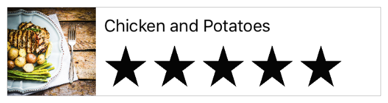
Learning Objectives
学習する目標
At the end of the lesson, you’ll be able to:
このレッスンの終わりに、あなたが出来るようになるのは：
Create a second storyboard scene
２つ目のストーリーボードを作成する
Understand the key components of a table view
テーブルビューの鍵となる部分を理解する
Create and design a custom table view cell
カスタム（あつらえの）ビューセルの作成と設計
Understand the roles of table view delegates and data sources
テーブルビュー委任先とデータソースの役割を理解する
Use an array to store and work with data
配列を使ったデータの保存と活用
Display dynamic data in a table view
動的なデータをテーブルビューで表示する
Create the Opening Scene
冒頭のシーンを作成する
So far, the FoodTracker app has a single scene managed by a view controller that represents a screen where a user can add and rate a new meal: the meal scene. Now it’s time to create the scene that shows the entire list of meals. Fortunately, iOS comes with a powerful built-in class called a table view (UITableView) designed specifically to display a scrolling list of items.
今までのところ、FoodTrackerアプリはただ１つだけのシーンを持ちます、それは、ビューコントローラによって管理され、ある画面を表現してそこでユーザが新しい食事を追加して格付けする：食事シーンです。今や食事のリスト全体を表示するシーンを作るときです。幸いにも、iOSは強力な組み込みのクラス、テーブルビュー（UITableView）と呼ばれるものを備えています、それが設計されるのは特にスクロールできる項目のリストを表示するためです。
A table view is managed by a table view controller (UITableViewController), a subclass of UIViewController that’s specialized for handling table view-related logic. You’ll create the new scene based on a table view controller.
テーブルビューは、テーブルビューコントローラ（UITableViewController）、UIViewControllerのサブクラスによって管理されます、それはテーブルビュー関連のロジックを取り扱うために特殊化されます。あなたは、新しいシーンをテーブルビューコントローラに基づいて作成します。
To add a scene with a table view to your storyboard
テーブルビューを持つシーンをあなたのストーリーボードに追加するには
Open your storyboard, Main.storyboard.
あなたのストーリーボード、Main.storyboardを開いてください。
Open the Object library in the utility area. (Alternatively, choose View > Utilities > Show Object Library.)
オブジェクトライブラリをユーティリティ区画で開いてください。（または代わりに、View > Utilities > Show Object Libraryを選びます）
In the Object library, find a Table View Controller object.
オブジェクトライブラリにおいて、Table View Controllerオブジェクトを見つけてください。
Drag a Table View Controller object from the list and drop it on the canvas to the left of the existing meal scene.
Table View Controllerオブジェクトをこの一覧からドラッグして、それをキャンバス上で既にある食事シーンの左にドロップしてください。
If you see a table view with content and nothing happens when you try to drag it to the canvas, you’re probably dragging a table view rather than a table view controller. A table view is one of the things managed by a table view controller, but you want the whole package, so find the table view controller and drag it to the canvas.
あなたが内容を持つテーブルビューを見る、そしてあなたがそれをキャンバスにドラッグしようとしたとき何も起こらないならば、あなたはおそらくテーブルビュコントローラではなくテーブルビューをドラッグしています。テーブルビューは、あるテーブルビューコントローラによって管理されるもののうちの１つです、しかしあなたは全部を一括して必要とします、それでテーブルビューコントローラを見つけてそれをキャンバスにドラッグしてください。
You now have two scenes, one for displaying the meal list and one for adding a new meal.
あなたは今２つのシーンを持ちます、食事リストを表示するために１つ、そして新しい食事を加えるために１つ。
It makes sense to have the meal list be the first thing users see when they launch your app, so tell Xcode that’s your intent by setting the table view controller as the first scene.
食事リストがあなたのアプリを起動した時にユーザが見る最初のものであるのは道理にかなっています、それでXcodeにそれがあなたの意向であることを、テーブルビューコントローラを最初のシーンとして設定することによって伝えます。
To set the table view controller as the initial scene
テーブルビューコントローラを冒頭シーンに設定するには
If you want more space to work, collapse the project navigator and utility area by clicking the Navigator and Utilities buttons in the Xcode toolbar.
あなたがもっと作業空間を必要とするならば、プロジェクトナビゲータとユーティリティ区画をXcodeツールパーのNavigatorとUtilitiesボタンをクリックすることで折り畳んでください。
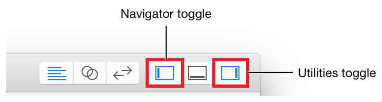
You can also collapse the outline view.
あなたはまたアウトラインビューも折り畳むことができます。
The table view controller is set as the initial view controller in your storyboard, making it the first scene that loads on app launch.
テーブルビューコントローラは、あなたのストーリーボードの冒頭ビューコントローラとして設定され、それがアプリの起動でロードされる最初のシーンにされます。
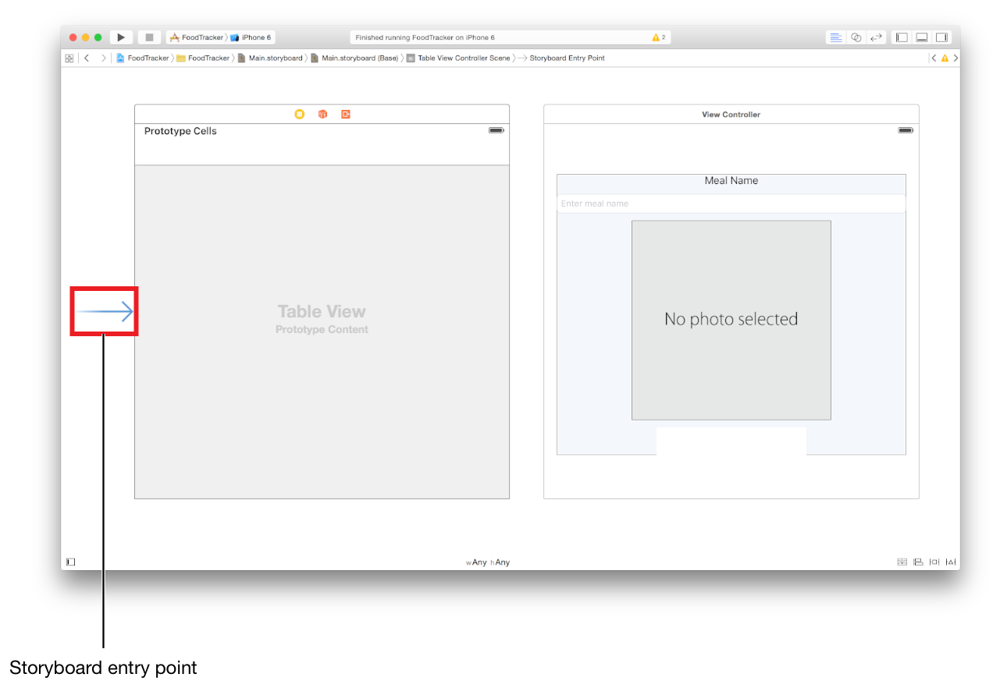
Checkpoint: Run your app. Instead of the meal scene with its text field, image view, and rating control, you should now see an empty table view—a screen with a number of horizontal dividers to separate it into rows, but with no content in each row.
確認点：あなたのアプリを実行してください。食事シーンとそれが持つそれのテキスト欄、イメージビュー、そして格付けコントロールではなく、あなたは今では空のテーブルビューを見るはずです—それは、画面をいくつかの水平仕切りで行へとそれを分けています、しかし各行は空です。
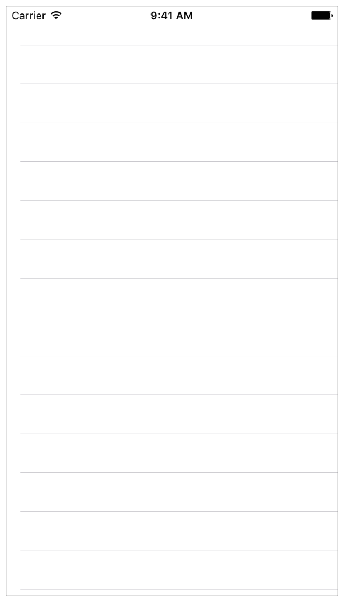
You need to change a few settings on this table view so you can use it in your app.
あなたが必要とするのは、テープルビュー上でいくつかの設定を変更して、それをあなたのアプリにおいて利用可能なものにすることです。
In the outline view, select Table View.
アウトラインビューにおいて、Table Viewを選択してください。
The table view is nested under Table View Controller Scene > Table View Controller. You may have to click the disclosure triangles next to those objects to see the nested table view.
テーブルビューは、Table View Controller Scene > Table View Controllerの下に入れ子にされます。あなたは、それらのオブジェクトの隣で開示三角形をクリックして入れ子にされたテーブルビューを見る必要があるでしょう。
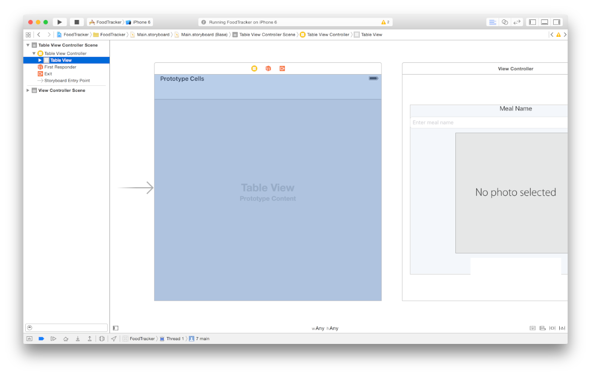
With the table view selected, open the Size inspector in the utility area.
テーブルビューが選択された状態で、Sizeインスペクタをユーティリティ区画で開いてください。
The Size inspector appears when you select the fifth button from the left in the inspector selector bar. It lets you edit the size and position of an object in your storyboard.
サイズインスペクタが現れるのはあなたが左から5番目のボタンをインスペクタ選択バーで選んだ時です。それは、あなたにあなたのストーリーボードの中のオブジェクトの大きさと位置を編集させます。
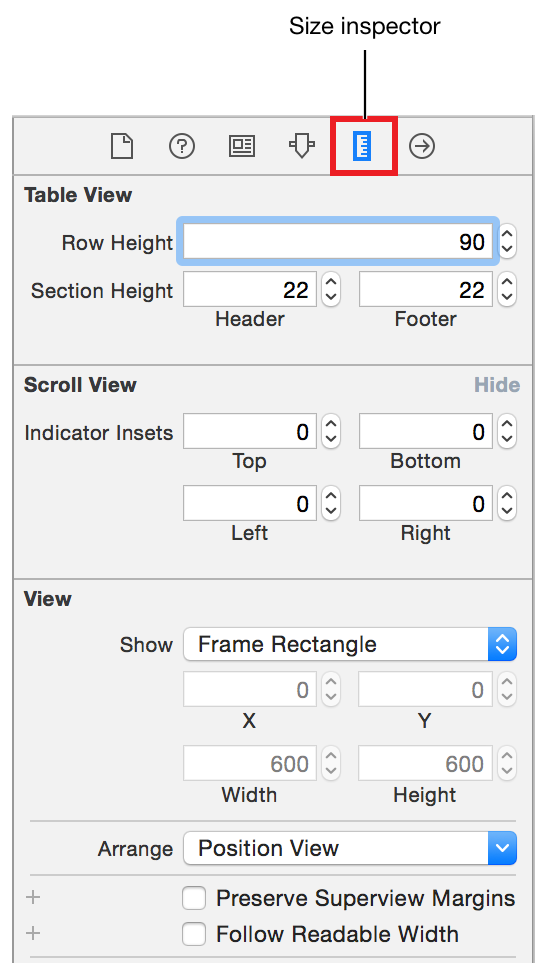
In the Size inspector, find the field labeled Row Height and type 90. Press Return.
サイズインスペクタにおいて、Row Heightとラベルをつけられる欄を探して90をタイプしてください。リターンキーを押します。
You’ll come back to working on the table view itself in a little while, after you design an interface for what the table view displays: its table view cells.
あなたは、テーブルビューそれ自体での作業に少ししたら戻ってきます、あなたがインターフェイス設計を、テーブルビューが表示するのは何か、についてした後にです：それはテーブルビューセル（表のます目）です。
Design Custom Table Cells
カスタムテーブルセル設計
The individual rows in a table view are managed by table view cells (UITableViewCell), which are responsible for drawing their contents. Table view cells come with a variety of predefined behavior and default cell styles. Default cell styles are great for a lot of situations, but you have more content to display in each of your cells than the default styles allow, so you’ll need to define a custom cell style.
テーブルビュー内の個々の行は、テーブルビューセル（UITableViewCell）によって管理されます、それはその内容を描画する責任を持ちます。テーブルビューセルは、さまざまな前もって定義された挙動と省略時のセルスタイルを備えます。省略時のセルスタイルは多くの状況に最適です、しかしあなたは各セルに表示する内容を省略時のスタイルが許すよりもっとたくさん持ちます、それであなたはカスタム（あつらえの）セルビューを定義する必要があります。
To create a subclass of UITableViewCell
UITableViewCellのサブクラスを作成するには
Choose File > New > File (or press Command-N).
File > New > Fileを選んでください（またはコマンド-Nを押します）。
On the left of the dialog that appears, select Source under iOS.
現れたダイアログの左で、SourceをiOSの下で選んでください。
Select Cocoa Touch Class, and click Next.
Cocoa Touch Classを選んで、Nextをクリックしてください。
In the Class field, type Meal.
Class欄において、Mealをタイプしてください。
In the “Subclass of” field, select UITableViewCell.
「Subclass of」欄において、UITableViewCellを選んでください。
The class title changes to MealTableViewCell. Xcode makes it clear from the naming that you’re creating a custom table view cell, so leave the new name as is.
クラスのタイトルをMealTableViewCellに変更してください。Xcodeにはその名前の付け方からあなたがカスタムテーブルセルを作成しているのが明らかです、それで新しい名前はそのままにされます。
Make sure the Language option is set to Swift.
LanguageオプションがSwiftに設定されていることを確かめてください。
Click Next.
Nextをクリックしてください。
The save location defaults to your project directory.
保存場所は、初期状態であなたのプロジェクトディレクトリです。
The Group option defaults to your app name, FoodTracker.
Groupオプションは、初期状態であなたのアプリ名、FoodTrackerです。
In the Targets section, make sure your app is selected and the tests for your app are unselected.
Targets区画において、あなたのアプリが選択されて、あなたのアプリのためのテストは選択されないことを確かめてください。
Leave these defaults as they are, and click Create.
これらの初期値はそれらのままにしておきます、そしてCreateをクリックします。
Xcode creates a file that defines the MealTableViewCell class: MealTableViewCell.swift.
Xcodeは、MealTableViewCellクラスを定義するファイル：MealTableViewCell.swiftを作成します。
Now, open your storyboard.
次に、あなたのストーリーボードを開いてください。
If you look at the table view controller scene in your storyboard, you’ll notice that it shows only a single cell.
あなたがテーブルビューコントローラシーンをあなたのストーリーボードで観察するならば、あなたはそれがただ１つのセルだけを表示するのに気づくでしょう。
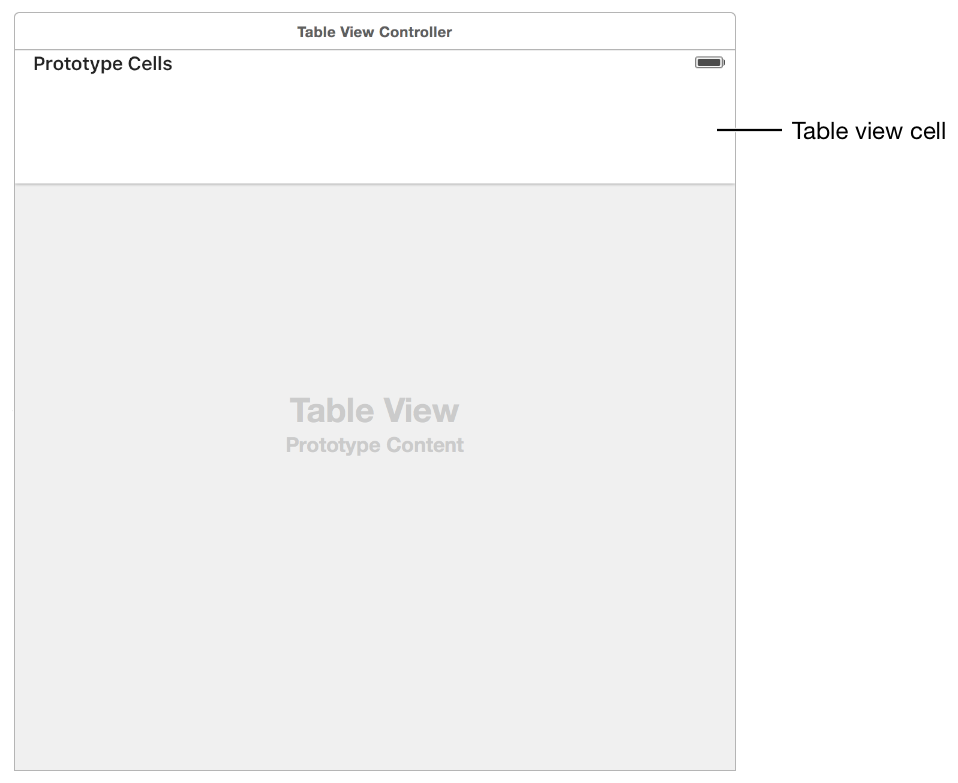
This cell represents a prototype for the other cells; the design and behavior you give this cell will be used by the other cells in the table view. But first, you need to do a little bit of configuration. Connect the table view cell in your scene to the custom cell subclass you just created.
このセルは、他のセルの原型（プロトタイプ）を表しています；あなたがこのセルに与える設計と挙動はテープルビューの中の他のセルによって使われることになります。しかし最初に、あなたが必要とするのは、ちょっとした構成を行うことです。あなたのシーンの中のテーブルビューセルを、あなたがたった今作成したカスタムセルサブクラスに接続しましょう。
To configure a custom cell for your table view
カスタムセルをあなたのテーブルビューに対して構成するには
In the outline view, select Table View Cell.
アウトラインビューにおいて、Table View Cellを選択してください。
The cell is nested under Table View Controller Scene > Table View Controller > Table View. You may have to disclose those objects to see the table view cell.
セルは、Table View Controller Scene > Table View Controller > Table Viewの下に入れ子にされます。あなたは、それらのオブジェクトを開いていって、テーブルビューセルを見なければならないでしょう。
With the table view cell selected, open the Attributes inspector in the utility area.
テーブルビューセルが選択された状態で、Attributesインスペクタをユーティリティ区画で開いてください。
In the Attributes inspector, find the field labeled Identifier and type MealTableViewCell. Press Return.
Attributesイスンペクタにおいて、Identifierとラベルをつけられる欄を見つけてMealTableViewCellとタイプしてください。リターンキーを押します。
This is an important step—you’ll see why later.
これは重要な処置です—あなたはなぜかが後でわかります。
In the Attributes inspector, find the field labeled Selection and select None.
Attributesインスペクタにおいて、Selectionとラベルをつけられる欄を見つけてNoneを選択します。
With this option, the cell won’t get a visual highlight when a user taps it.
このオプションで、セルはユーザがそれをタップした時に視覚的な強調をされません。
Open the Size inspector.
Sizeインスペクタを開いてください。
In the Size inspector, find the field labeled Row Height and type 90.
サイズインスペクタにおいて、Row Heightとラベルをつけられる欄を探して90をタイプしてください。
Make sure the Custom checkbox next to this field is selected:
この欄の隣のCustomチェックボックスが選択されることを確かめてください：
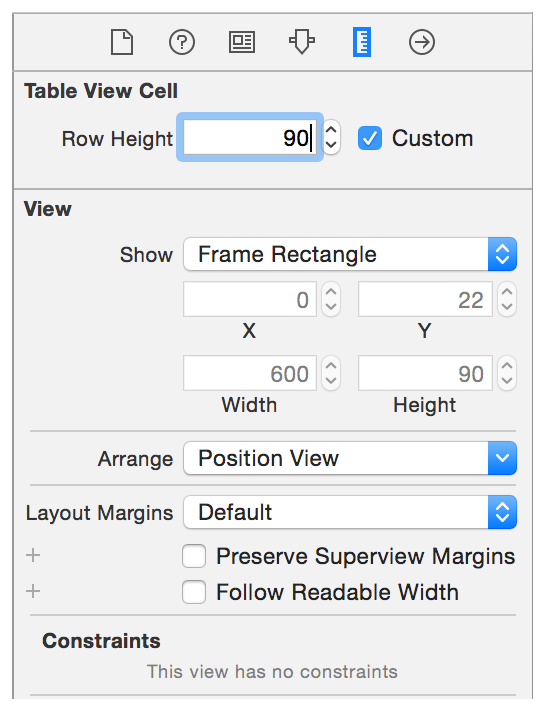
Press Return to display the new cell height in your storyboard.
リターンキーを押して新しいセルの高さをあなたのストーリーボードにおいて表示してください。
Open the Identity inspector.
Identityインスペクタを開いてください。
Recall that the Identity inspector lets you edit properties of an object in your storyboard related to that object’s identity, such as what class the object belongs to.
思い出してください、同一性インスペクタは、あなたにあなたのストーリーボードのあるオブジェクトのプロパティをそのオブジェクトの同一性に関して、例えばどのクラスにそのオブジェクトが所属するかなどを、編集させます。
In the Identity inspector, find the field labeled Class and select MealTableViewCell.
Identityインスペクタにおいて、Classとラベルをつけられる欄を探してMealTableViewCellを選択してください。
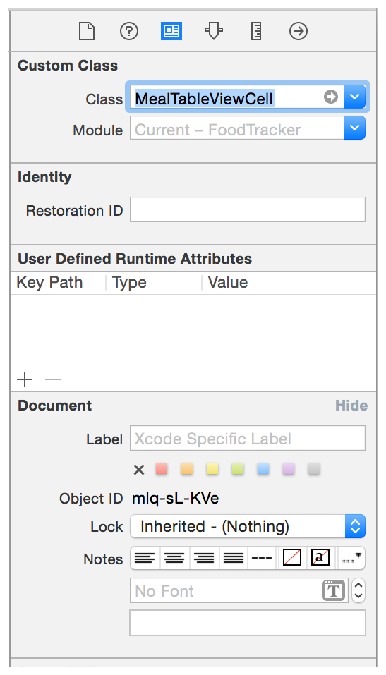
With the cell configured, you can design its custom UI directly in the storyboard. It’ll contain the meal name, photo, rating, and look something like this:
セルが構成されたので、あなたはそれのカスタムUIを直接にあなたのストーリーボード上で設計できます。それは、食事名、写真、格付けを含み、そしてこのようなものに見えるでしょう：
For this, you’ll need a label, an image view, and a rating control. You can reuse the rating control UI you created in an earlier lesson.
これに対して、あなたはラベル、イメージビュー、そして格付けコントロールを必要とします。あなたは、あなたが前のレッスンで作成した格付けコントロールUIを再利用できます。
To design the interface of the custom table cell
カスタムテーブルセルのインターフェイスを設計するには
Choose Editor > Canvas > Show Bounds Rectangles to show the bounds of the elements in the UI, making it easier to align elements in the table cell.
Editor > Canvas > Show Bounds Rectanglesを選択することでUIの中の要素の境界線を示して、簡単にテーブルセルの中の要素を整列できるようにしてください。
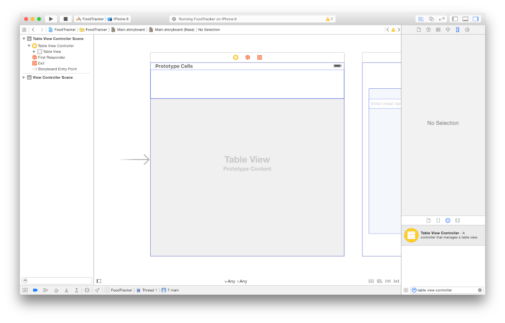
Use the Object library to find an Image View object and drag it onto the table cell.
オブジェクトライブラリを使ってImage Viewオブジェクトを探してそれをテーブルセル上へドラッグしてください。
Drag and resize the image view so that it’s square, flush against the left, top, and bottom of the cell.
イメージビューをドラッグおよびサイズ調節して、それが正方形で、セルの左、上、そして下に対してくっつくようにしてください。
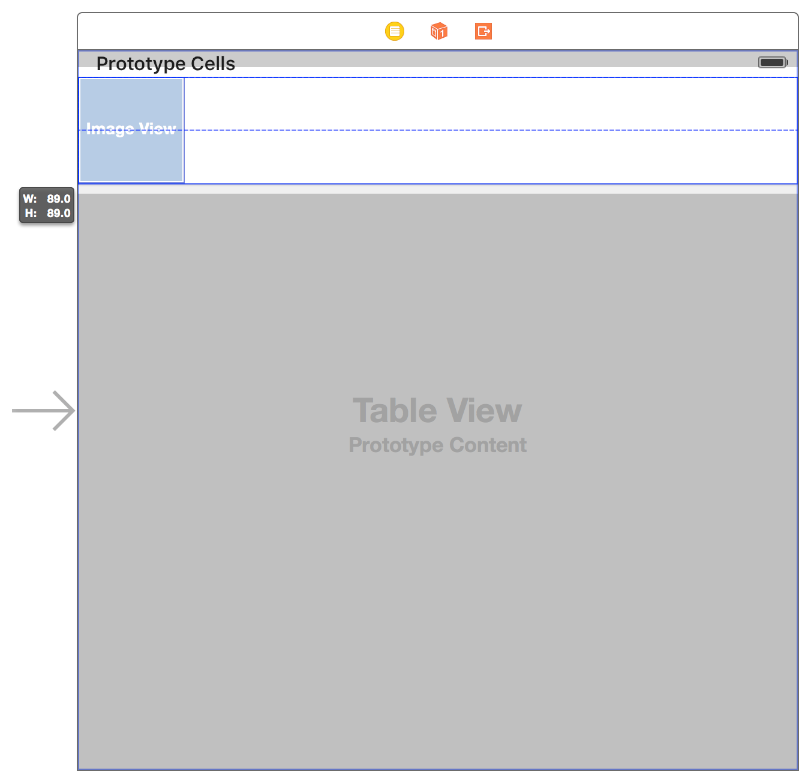
If you didn’t add a default photo to your project in a previous lesson, add it now.
あなたが省略時の写真をあなたのプロジェクトに以前のレッスンで加えなかったならば、今それを加えてください。
With the image view selected, open the Attributes inspector in the utility area.
そのイメージビューが選択された状態で、Attributesインスペクタをユーティリティ区画で開いてください。
In the Attributes inspector, find the field labeled Image and select defaultPhoto.
Attributesインスペクタにおいて、Imageとラベルをつけられる欄を探してdefaultPhotoを選択します。
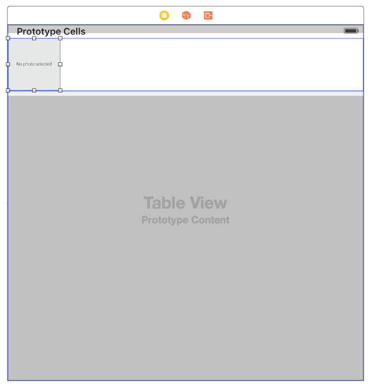
Use the Object library to find a Label object and drag it onto the table cell.
オブジェクトライブラリを使ってLabelオブジェクトを探してそれをテーブルセル上にドラッグしてください。
Drag the label so that it’s close to the right side of the image view and aligned with the top margin in the table cell.
そのラベルをドラッグして、それがイメージビューの右側に近接して、テーブルセルの上余白に合うようにしてください。
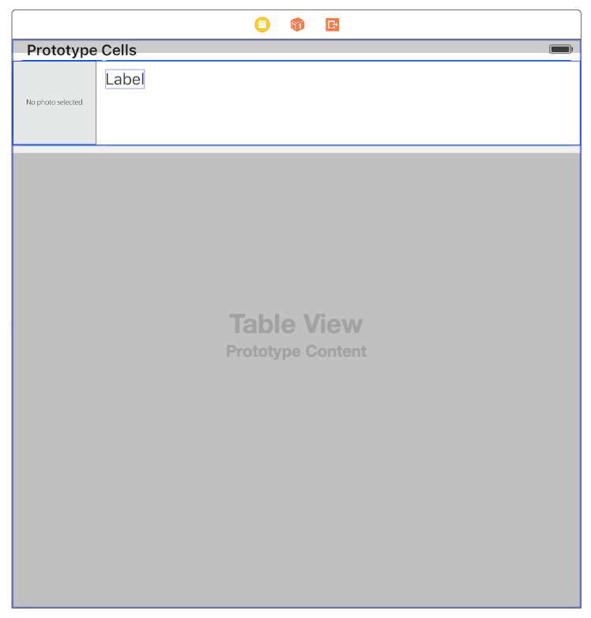
Resize the label so that its right edge stretches to the right margin of the table cell.
そのラベルをサイズ調整して、それの右端がラベルセルの右余白まで及ぶよう伸ばしてください。
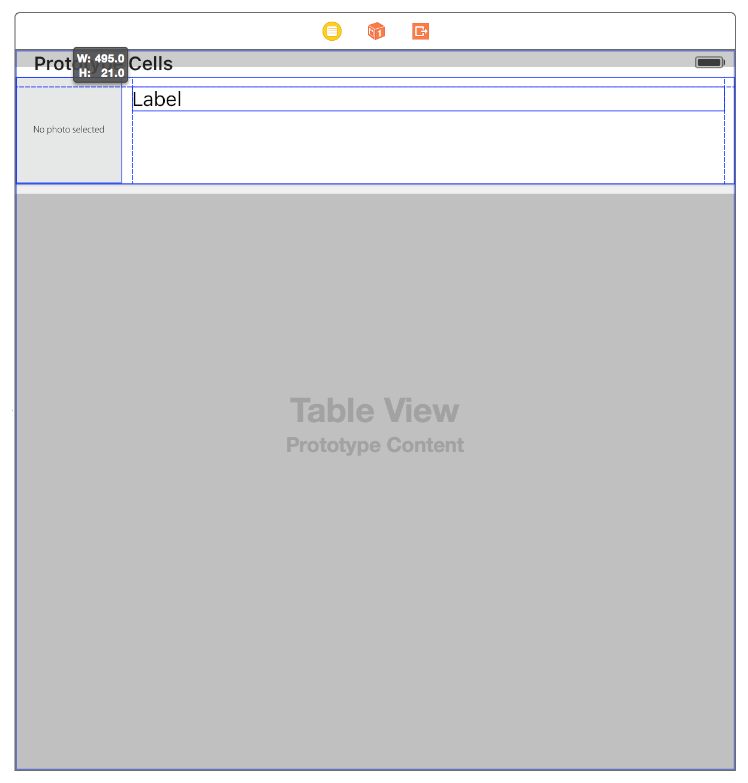
Use the Object library to find a View object and drag it onto the table cell.
オブジェクトライブラリを使ってViewオブジェクトを見つけて、それをテーブルセル上にドラッグしてください。
With the view selected, open the Size inspector in the utility area.
そのビューが選択された状態で、Sizeインスペクタをユーティリティ区画で開いてください。
In the Size inspector, type 44 in the Height field and 240 in the Width field. Press Return.
サイズインスペクタにおいて、Height（高さ）欄に44をWidth（幅）欄に240をタイプしてください。リターンキーを押します。
Drag the view so that it’s below the label and aligned with the label’s left margin.
このビューをドラッグして、それがラベルの下に、ラベルのもつ左余白に整列するようにしてください。
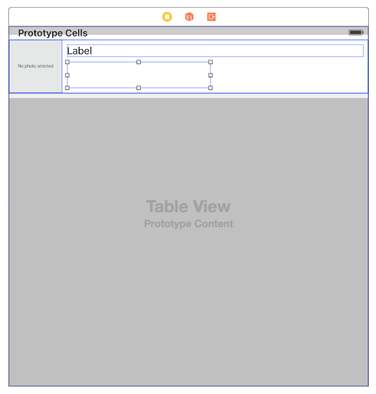
With the view selected, open the Identity inspector.
このビューが選択された状態で、Identityインスペクタを開いてください。
In the Identity inspector, find the field labeled Class and select RatingControl.
同一性インスペクタにおいて、Classとラベルをつけられる欄を探してRatingControlを選択してください。
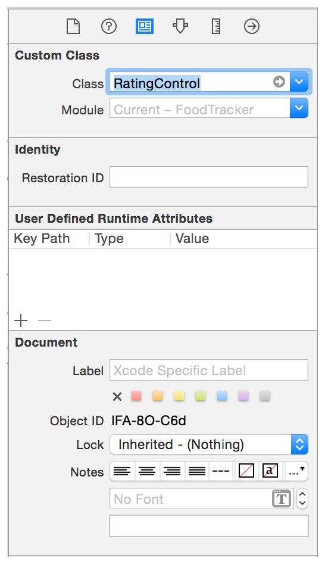
If you don’t see RatingControl as an option in the pop-up menu, make sure you have the correct UI element selected on the canvas (the one shown with resize handles in the previous image.)
あなたがRatingControlをオプションとしてポップアップメニューに見ないならば、あなたが正しいUI要素を選択していることをキャンパス上で確かめてください（リサイズハンドルとともに前の画像で示されるもの）。
With the view selected, open the Attributes inspector .
このビューが選択された状態で、Attributesインスペクタを開いてください。
In the Attributes inspector, find the field labeled Interaction and deselect the User Interaction Enabled checkbox.
Attributesインスペクタにおいて、Interactionと名前を付けられるラベルを探して、User Interaction Enabledチェックボックスを選択解除してください。
You designed your custom rating control class to be interactive, but it doesn’t need to be interactive when it’s displayed in this table view cell. So it’s important to disable that interaction when it’s in this context.
あなたは、あなたのカスタム格付けコントロールクラスを相互作用するように設計しました、しかしそれがこのテーブルビューセルにおいて表示される時は相互作用する必要はありません。それでそれがこの状況にある時はこの相互作用を作動しないようにすることが重要です。
Your UI should look something like this:
あなたのUIはこのようなものに見えるはずです：
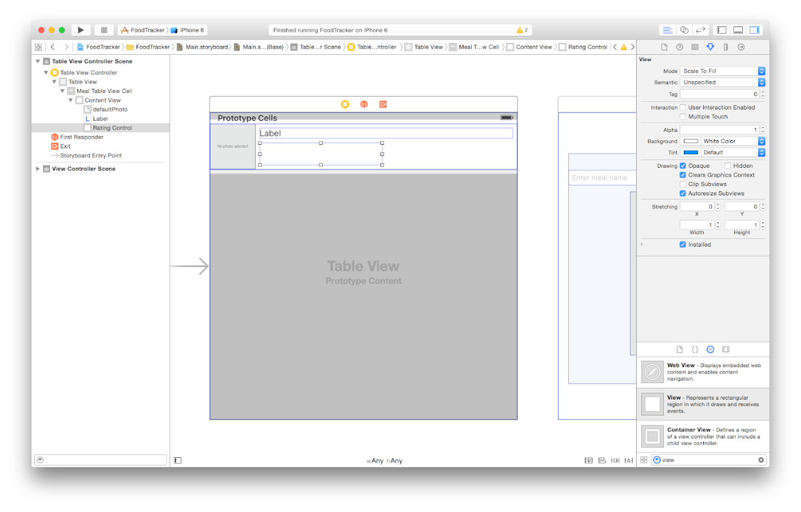
Checkpoint: Run your app. The table view cells now look taller. But even though you added all the necessary UI elements to your table view cells, they’re showing up empty, just like before. Why’s that?
確認点：あなたのアプリを実行してください。テーブルビューセルは今ではより長く見えます。しかしあなたがすべての必要なUI要素をあなたのテーブルビューセルに加えたとしても、それらは空で現れています、ちょうど前のように。これはなぜ？
In a storyboard, a table view can be configured to display static data (supplied in the storyboard UI) or dynamic data (supplied by the table view controller logic). The table view defaults to using dynamic data, and because you’ll need to load data in code, this is what you want it to do—you just haven’t implemented that behavior yet. This means that the static content you supplied in the storyboard doesn’t show up at runtime, so you can’t see it when you run the app—until you implement the data model behind it.
ストーリーボードでは、テーブルビューは構成されることができて静的データ（ストーリーボードにおいて提供されるもの）または動的データ（テーブルビューコントローラロジックによって提供されるもの）を画面表示します。テーブルビューは初期状態で動的データを使います、そしてそのためあなたはコードにおいてデータのロードを必要とします、これはあなたがそれに行うのを望むことです—あなたは単にその挙動をまだ実装していません。これが意味するのは、あなたがストーリーボードにおいて提供した静的データは実行時に現れないということです、それであなたはそれをアプリを実行した時に見ることがでません—あなたがそれの背後にデータモデルを実装するまでは。
Click the Assistant button in the Xcode toolbar to open the assistant editor.
AssistantボタンをXcodeツールバーにおいてクリックしてアシスタントエディタを開いてください。
If you want more space to work, collapse the project navigator and utility area by clicking the Navigator and Utilities buttons in the Xcode toolbar.
あなたがもっと場所を必要とするならば、プロジェクトナビゲータとユーティリティ区画をNavigatorとUtilitiesボタンをXcodeツールバーにおいてクリックすることで折り畳んでください。
You can also collapse the outline view.
あなたはまたアウトラインビューも折り畳むことができます。
In the editor selector bar, which appears at the top of the assistant editor, switch the assistant editor from Automatic to Preview > Main.storyboard (Preview).
アシスタントエディタの最上部にある、エディタ選択バーにおいて、アシスタントエディタをAutomaticからPreview > Main.storyboard（プレビュー）へ切り替えてください。
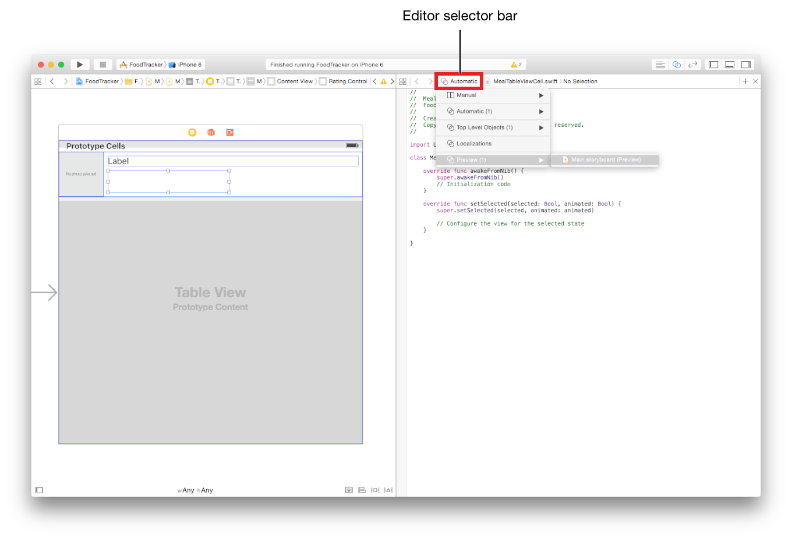
Your Xcode window should look something like this:
あなたのXcodeはこのようなものに見えるはずです：
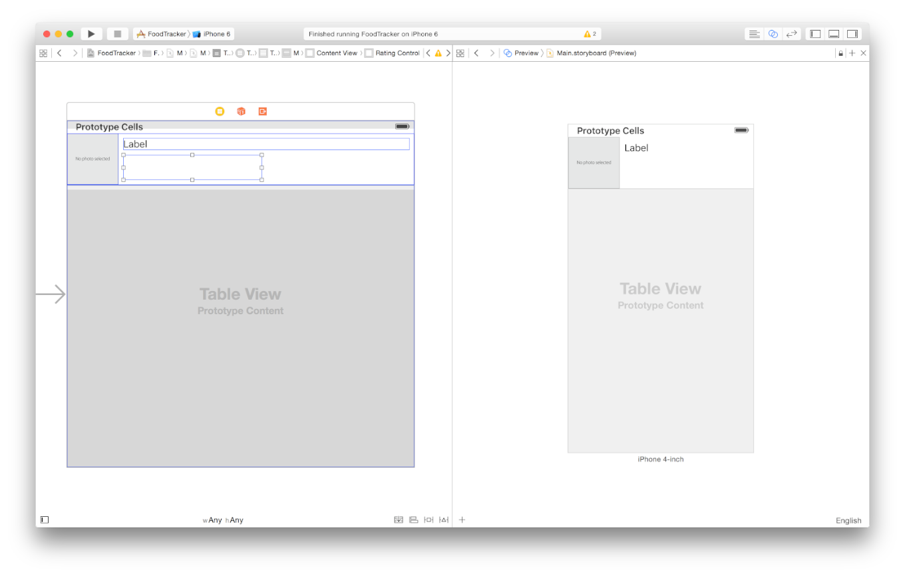
The preview shows that the UI looks as expected. The prototype table view cell UI looks finished.
このプレビューが見せるのは予想通りのUIです。試作品テーブルビューセルUIは完成して見えます。
Add Images to Your Project
あなたのプロジェクトに画像を加える
Next, you need to add a few sample images to your project. You’ll use these images when you load initial meal data into your app.
次に、あなたが必要とするのは、いくつかの見本画像をあなたのプロジェクトに加えることです。あなたがこれらの画像を使うのは、あなたが最初の食事画像データをあなたのアプリにロードする時です。
You can find sample images within the Images/ folder of the downloadable file at the end of this lesson, or use your own images. (Just make sure the names of the images you use match the image names in the code later.)
あなたは見本画像をこのレッスンの終わりでダウンロード可能なファイルのImages/フォルダ内で見つけることができます、またはあなた独自の画像を使うことができます。（ただあなたが使う画像の名前が後のコードの中の画像名と一致するようにしてください。）
To add images to your project
いくらかの画像をあなたのプロジェクトに加えるには
If the assistant editor is open, return to the standard editor by clicking the Standard button.
アシスタントエディタが開かれているならば、Standardボタンをチェックすることで標準エディタに戻ってください。
Open the project navigator and utility area by clicking the Navigator and Utilities buttons in the Xcode toolbar.
プロジェクトナビゲータとユーティリティ区画をXcodeツールパーのNavigatorとUtilitiesボタンをクリックすることで開いてください。
In the project navigator, select Assets.xcassets to view the asset catalog.
プロジェクトナビゲータにおいて、Assets.xcassetsを選択してアセットカタログを眺めてください。
Recall that the asset catalog is a place to store and organize your image assets for an app.
思い出してください、アセットカタログはあなたのアプリのためのあなたの画像資産を格納し整理するところです。
In the bottom left corner, click the plus (+) button and select New Folder from the pop-up menu.
１番下左隅で、プラスボタン（+）をクリックしてNew Folderをポップアップメニューから選択してください。
Double-click the folder name and rename it Sample Images.
フォルダ名をダブルクリックしてそれをSample Imagesに改名してください。
With the folder selected, in the bottom left corner, click the plus (+) button and choose New Image Set from the pop-up menu.
そのフォルダが選択された状態で、１番下左隅で、プラス（+）ボタンをクリックしてNew Image Set（新規画像セット）をポップアップメニューから選んでください。
Double-click the image set name and rename it to a name you’ll remember when you’re writing it in code.
その画像セット名をダブルクリックしてそれをある名前、あなたがコードに書く時思い出せるもの、に改名してください。
On your computer, select the image you want to add.
あなたのコンピュータ上で、あなたが加えたい画像を選択してください。
Drag and drop the image into the 2x slot in the image set.
その画像を画像セットの2xの挿入位置にドラック＆ドロップしてください。
Repeat steps 5–8 for as many images as you like. The rest of this lesson assumes you have three different images.
５–８の処置をあなたが望む画像の数だけ繰り返してください。このレッスンの残りは、あなたが３つの異なる画像を持つと仮定します。
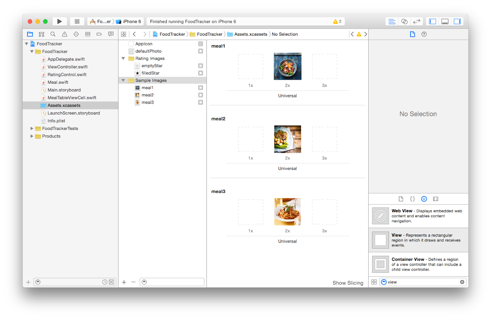
Connect the Table Cell UI to Code
テーブルセルUIをコードに接続する
Before you can display dynamic data in your table view cells, you need to create outlet connections between the views in your storyboard and the code that represents the table view cell in MealTableViewCell.swift.
動的データをあなたのテーブルビューセルの中に表示するまでに、あなたが必要とするのは、アウトレット接続をあなたのストーリーボードのビューとテーブルビューセルをMealTableViewCell.swiftで表しているコードとの間に作成することです。
To connect the views to the MealTableViewCell.swift code
ビューをMealTableViewCell.swiftコードに接続するには
In your storyboard, select the label in the table view cell.
あなたのストーリーボードにおいて、ラベルをテーブルビューセルにおいて選択してください。
Click the Assistant button in the Xcode toolbar to open the assistant editor.
AssistantボタンをXcodeツールバーにおいてクリックしてアシスタントエディタを開いてください。
If you want more space to work, collapse the project navigator and utility area by clicking the Navigator and Utilities buttons in the Xcode toolbar.
あなたがもっと作業空間を必要とするならば、プロジェクトナビゲータとユーティリティ区画をXcodeツールパーのNavigatorとUtilitiesボタンをクリックすることで折り畳んでください。
In the editor selector bar, which appears at the top of the assistant editor, switch the assistant editor from Preview to Automatic > MealTableViewCell.swift.
アシスタントエディタの最上部にある、エディタ選択バーにおいて、アシスタントエディタをPreviewからAutomatic > MealTableViewCell.swiftへ切り替えてください。
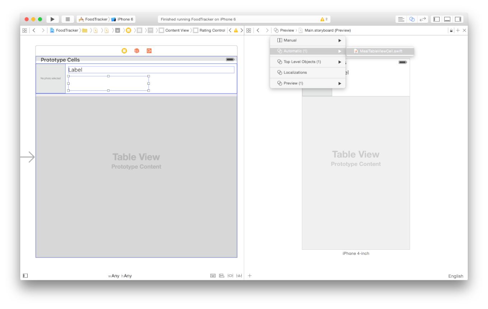
MealTableViewCell.swift displays in the editor on the right.
MealTableViewCell.swiftは、エディタの右に表示されます。
In MealTableViewCell.swift, find the class line, which should look like this:
MealTableViewCell.swiftにおいて、class行を見つけてください、それはこのように見えるはずです：
classMealTableViewCell: UITableViewCell {
Below the class line, add the following:
class行の下に、以下を加えてください：
// MARK: Properties
Control-drag from the label on your canvas to the code display in the editor on the right, stopping the drag at the line below the comment you just added in MealTableViewCell.swift.
あなたのキャンバス上のラベルから右のエディタのコード表示までコントロール-ドラッグして、あなたが今ViewController.swiftに加えたコメントの下の行でドラッグをやめます。
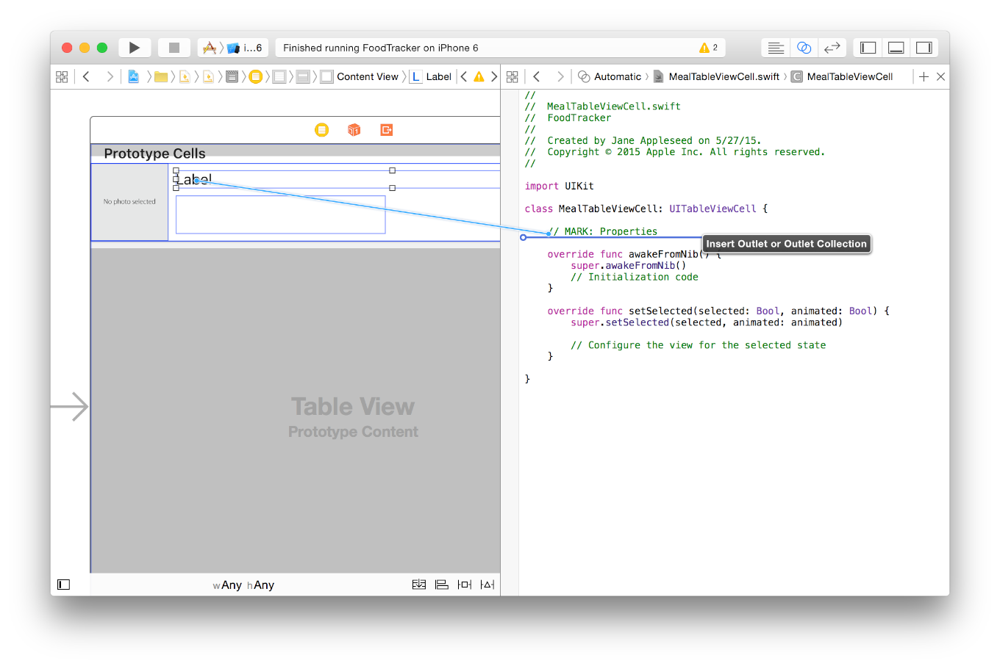
In the dialog that appears, for Name, type nameLabel.
現れたダイアログにおいて、Nameに、nameLabelをタイプしてください。
Leave the rest of the options as they are. Your dialog should look like this:
残りのオプションはそれらのままにしておきます。あなたのダイアログはこのように見えるはずです：
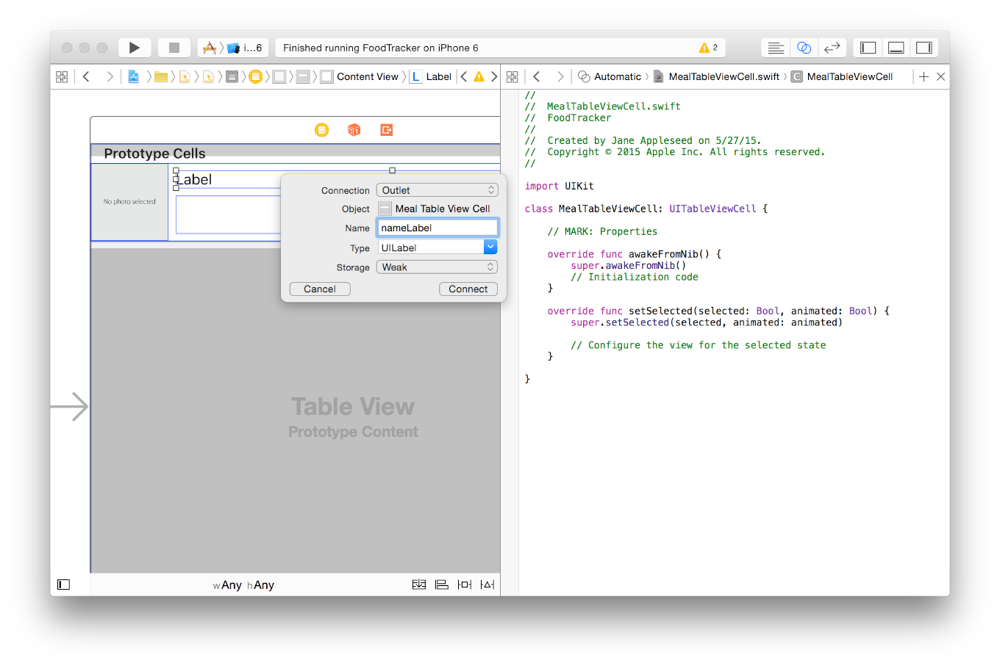
Click Connect.
Connectをクリックしてください。
In your storyboard, select the image view in the table view cell.
あなたのストーリーボードにおいて、イメージビューをテーブルビューセルにおいて選択してください。
Control-drag from the image view on your canvas to the code display in the editor on the right, stopping the drag at the line just below the nameLabel property in MealTableViewCell.swift.
あなたのキャンバス上のイメージビューから右のエディタの中のコード表示へコントロール-ドラッグして、MealTableViewCell.swiftの中のnameLabelプロパティのすぐ下の行でドラッグをやめてください。
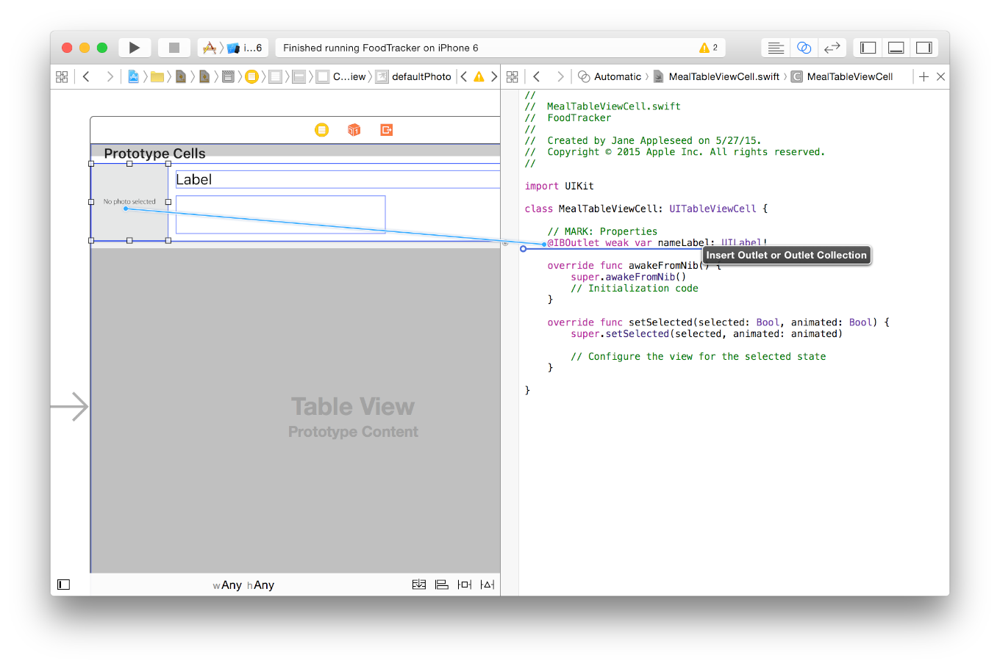
In the dialog that appears, for Name, type photoImageView.
現れたダイアログにおいて、名前に、photoImageViewをタイプしてください。
Leave the rest of the options as they are and click Connect.
残りのオプションはそれらのままにしておき、Connectをクリックします。
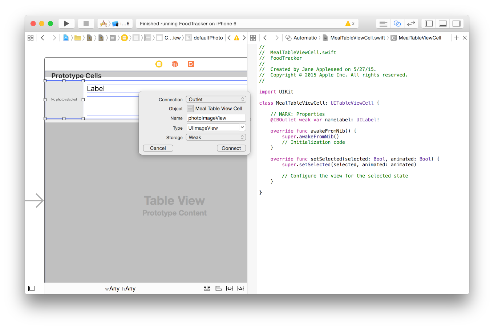
In your storyboard, select the rating control in the table view cell.
あなたのストーリーボードにおいて、格付けコントロールをテーブルビューセルにおいて選択してください。
Control-drag from the rating control on your canvas to the code display in the editor on the right, stopping the drag at the line just below the photoImageView property in MealTableViewCell.swift.
あなたのキャンバス上の格付けコントロールから右のエディタの中のコード表示へコントロール-ドラッグして、MealTableViewCell.swiftの中のphotoImageViewプロパティのすぐ下の行でドラッグをやめてください。
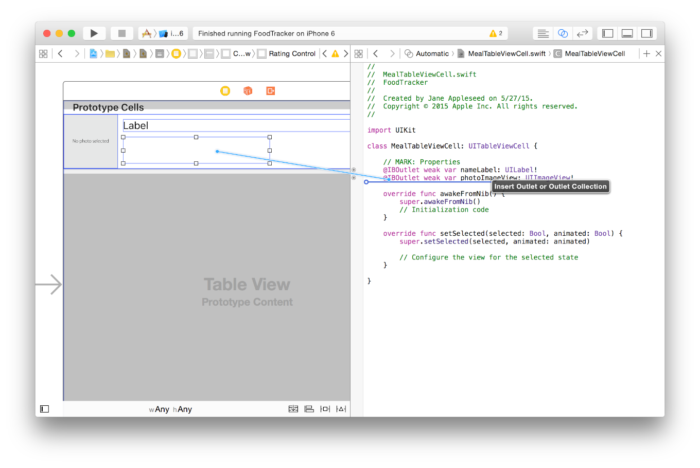
In the dialog that appears, for Name, type ratingControl.
現れたダイアログにおいて、名前に、ratingControlをタイプしてください。
Leave the rest of the options as they are and click Connect.
残りのオプションはそれらのままにしておき、Connectをクリックします。
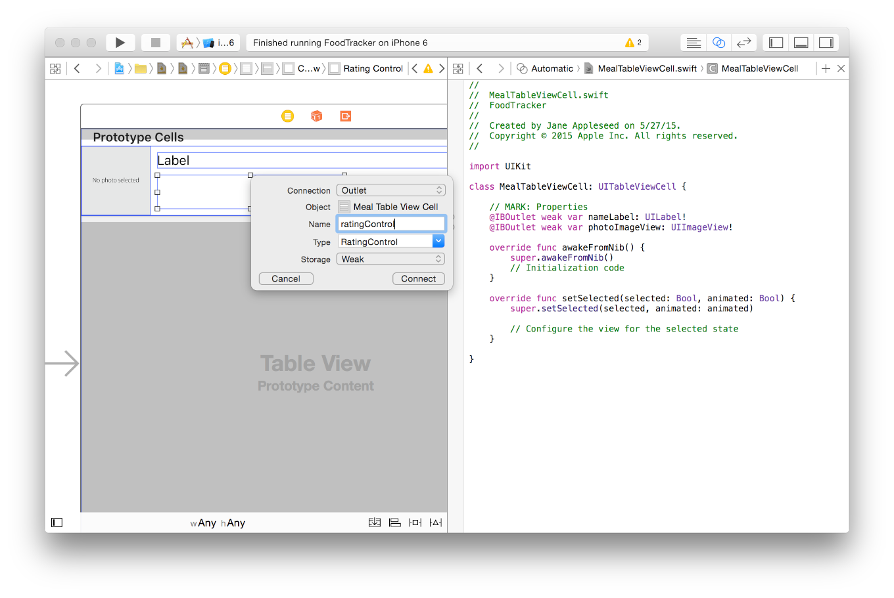
Your outlets in MealTableViewCell.swift should look like this:
あなたのアウトレットはMealTableViewCell.swiftにおいてこのように見えるはずです：
@IBOutletweakvarnameLabel: UILabel!
@IBOutletweakvarphotoImageView: UIImageView!
@IBOutletweakvarratingControl: RatingControl!
Load Initial Data
初期データのロード
To display any real data in your table cells, you need to write code to load that data. At this point, you have a data model for a meal: the Meal class. You also need to keep a list of those meals. The natural place to track this is in a custom view controller subclass that’s connected to the meal list scene. This view controller will manage the view that displays the list of meals, and have a reference to the data model behind what’s shown in the UI.
何らかの実際のデータをあなたのテーブルセルに表示するために、あなたが必要とするのはコードを書いてそのデータをロードすることです。この時点で、あなたはある食事に対するデータモデル：Mealクラスを持ちます。あなたはまたそれら食事のリストを保持する必要があります。この足跡を残しておく自然な場所は、カスタムビューコントローラのサブクラスの中です、それは食事リストシーンに接続されます。このビューコントローラは、食事リストを表示するビューを管理します、そしてUIにおいて見せられるものの背後にあるデータモデルへの参照を持ちます。
First, create a custom table view controller subclass to manage the meal list scene.
最初に、食事リストシーンを管理するためのカスタムビューコントローラのサブクラスを作成します。
To create a subclass of UITableViewController
UITableViewControllerのサブクラスを作成するには
Choose File > New > File (or press Command-N).
File > New > Fileを選んでください（またはコマンド-Nを押します）。
On the left of the dialog that appears, select Source under iOS, then select Cocoa Touch Class.
現れたダイアログの左で、SourceをiOSの下で選んでください、それからCocoa Touch Classを選択します。
Click Next.
Nextをクリックしてください。
In the Class field, type Meal.
Class欄において、Mealをタイプしてください。
In the “Subclass of” field, select UITableViewController.
「Subclass」欄において、UITableViewControllerを選択してください。
The class title changes to MealTableViewController. Leave that as is.
クラスタイトルがMealTableViewControllerに変わります。それはそのままにします。
Make sure the “Also create XIB file” option is unselected.
「Also create XIB file」オプションが選択されないことを確かめてください。
Make sure the Language option is set to Swift.
LanguageオプションがSwiftに設定されていることを確かめてください。
Click Next.
Nextをクリックしてください。
The save location defaults to your project directory.
保存場所は、初期状態であなたのプロジェクトディレクトリです。
The Group option defaults to your app name, FoodTracker.
Groupオプションは、初期状態であなたのアプリ名、FoodTrackerです。
In the Targets section, your app is selected and the tests for your app are unselected.
Targets区画において、あなたのアプリが選択されて、あなたのアプリのためのテストは選択されません。
Leave these defaults as they are, and click Create.
これらの初期値はそれらのままにしておきます、そしてCreateをクリックします。
Xcode creates MealTableViewController.swift, a source code file that defines your custom table view controller subclass.
XcodeはMealTableViewController.swift、あなたのカスタムテーブルビューコントローラサブクラスを定義するファイル、を作成します、
In this custom subclass, you can now define a property to store a list of Meal objects. The Swift standard library includes a structure called Array that works well for tracking lists of items.
このカスタムサブクラスにおいて、あなたは現在ひとつのプロパティを定義してMealオブジェクトのリストを格納します。Swift標準ライブラリは、ある構造体を含みます、それはArrayと呼ばれるものでいくつかの項目からなるリストの追跡に対して申し分なく働きます。
To load the initial data
初期データをロードするには
If the assistant editor is open, return to the standard editor by clicking the Standard button.
アシスタントエディタが開かれているならば、Standardボタンをチェックすることで標準エディタに戻ってください。
Expand the project navigator and utility area by clicking the Navigator and Utilities buttons in the Xcode toolbar.
プロジェクトナビゲータとユーティリティ区画をNavigatorとUtilitiesボタンをXcodeツールバーでクリックすることで広げてください。
Open MealTableViewController.swift.
MealTableViewController.swiftを開いてください。
Below the class line in MealTableViewController.swift, add the following code:
MealTableViewController.swiftの中のclass行の下に、以下のコードを加えてください：
// MARK: Properties
varmeals = [Meal]()
This code declares a property on MealTableViewController and initializes it with a default value (an empty array of Meal objects). By making meals a variable (var) instead of a constant, you make the array mutable, which means you can add items to it after you initialize it.
この行は１つのプロパティをMealTableViewController上で宣言して、それを省略時の値で初期化します（Mealオブジェクトの空の配列）。mealsを定数ではなく変数（var）にすることで、あなたはこの配列を可変にします、それはあなたがそれを初期化した後にそれに項目を加えることができることを意味します。
In MealTableViewController.swift, after the viewDidLoad() method, add the following method:
MealTableViewController.swiftにおいて、viewDidLoad()メソッドの後に、以下のメソッドを加えてください：
funcloadSampleMeals() {
}
This is a helper method to load sample data into the app.
これはヘルパーメソッドで、見本データをアプリにロードします。
In the loadSampleMeals() method, add this code to create a few Meal objects. You can name and rate these sample meals whatever you like, of course, but here are some examples:
loadSampleMeals()メソッドにおいて、このコードを加えて２、３のMealオブジェクトを作成してください。あなたはこれらの見本の食事に好きなように名前と格付けを付けることができます、もちろん、しかしここにいくつかの例があります：
letmeal2 = Meal(name: "Chicken and Potatoes", photo: photo2, rating: 5)!
letphoto3 = UIImage(named: "meal3")!
letmeal3 = Meal(name: "Pasta with Meatballs", photo: photo3, rating: 3)!
Make sure the names of the images in your project match the names you write in this code.
あなたのプロジェクトにおける画像の名前があなたがこのコードに書いた名前と合致することを確かめてください。
After creating the Meal objects, add them to the meals array using this code:
いくらのMealオブジェクトの作成の後で、それらをmeals配列にこのコードを使って加えてください：
meals += [meal1, meal2, meal3]
Find the viewDidLoad() method. The template implementation looks like this:
viewDidLoad()メソッドを見つけてください：ひな形実装はこのように見えます：
overridefuncviewDidLoad() {
super.viewDidLoad()
// Uncomment the following line to preserve selection between presentations （以下の行のコメントを外すと、表示間で選択を保護します）
// self.clearsSelectionOnViewWillAppear = false
// Uncomment the following line to display an Edit button in the navigation bar for this view controller. （以下の行のコメントを外すと、このビューコントローラのナビゲーションバーで「編集」ボタンを表示します）
The template implementation of this method includes comments that were inserted by Xcode when it created MealTableViewController.swift. Code comments like this provide helpful hints and contextual information in source code files, but you don’t need them for this lesson.
このメソッドの見本実装は、コメントを含みます、それは、XcodeによってそれがMealTableViewController.swiftを作成した時に挿入されたものです。このようなコードコメントは、ソースコードファイルにおいて役に立つヒントと前後関係的な情報を提供します。
In the viewDidLoad() method, delete the comments and instead add this code after the call to super.viewDidLoad() to load the sample meal data:
viewDidLoad()メソッドにおいて、コメントを削除してこのコードをsuper.viewDidLoad()への呼び出しの後に加えて見本の食事データをロードしてください：
// Load the sample data. （見本データをロードする）
loadSampleMeals()
The calls the helper method you just wrote to load the data when the view loads. You separated this into its own method to make your code more modular and readable.
あなたが加えたばかりのヘルパーメソッドを呼び出して、ビューがロードされる時にデータをロードします。あなたは、あなたのコードをよりモジュール化し読みやすくするために、これを独自のメソッドに分割しました。
Your viewDidLoad() method should look like this:
あなたのviewDidLoad()メソッドはこのように見えるはずです：
overridefuncviewDidLoad() {
super.viewDidLoad()
// Load the sample data. （見本データをロードする）
loadSampleMeals()
}
And your loadSampleMeals() method should look something like this:
あなたのloadSampleMeals()メソッドはこのようなものに見えるはずです：
letmeal2 = Meal(name: "Chicken and Potatoes", photo: photo2, rating: 5)!
letphoto3 = UIImage(named: "meal3")!
letmeal3 = Meal(name: "Pasta with Meatballs", photo: photo3, rating: 3)!
meals += [meal1, meal2, meal3]
}
Checkpoint: Build your project by choosing Product > Build. It should build without errors.
確認点：あなたのプロジェクトをProduct > Buildを選んでビルドします。それはエラーなしてビルドするはずです。
Display the Data
データを表示する
At this point, your custom table view controller subclass, MealTableViewController, has a mutable array that’s prepopulated with some sample meals. Now you need to display this data in the UI.
この時点で、あなたのカスタムテーブルビューコントローラサブクラス、MealTableViewControllerは、可変の配列を１つ持ちます、それはいくつかの見本の食事が入れられています。次にあなたが必要とするのは、このデータをUIに表示することです。
To display dynamic data, a table view needs two important helpers: a data source and a delegate. A table view data source, as implied by its name, supplies the table view with the data it needs to display. A table view delegate helps the table view manage cell selection, row heights, and other aspects related to displaying the data. By default, UITableViewController and its subclasses adopt the necessary protocols to make the table view controller both a data source (UITableViewDataSource protocol) and a delegate (UITableViewDelegate protocol) for its associated table view. Your job is to implement the appropriate protocol methods in your table view controller subclass so that your table view has the correct behavior.
動的データを表示するために、テーブルビューは２つの重要な手助け：データソースと委任先を必要します。あるテーブルビューデータソースは、それの名前によってほのめかされるように、そのテーブルビューをそれが表示する必要があるデータとともに提供します。あるテーブルビュー委任先は、テーブルビューがセル選択、行の高さ、そして他のデータ表示に関する面を管理するのを助けます。初期時様態で、UITableViewControllerとそれのサブクラスは必要なプロトコルに準拠することで、テーブルビューコントローラをそれの関連データビューに対するデータソース（UITableViewDataSourceプロトコル）と委任先（UITableViewDelegateプロトコル）の両方にします。あなたの仕事は、適切なプロトコルメソッドをあなたのビューコントローラサブクラスに実装して、あなたのテーブルビュが正しく振舞うようにすることです。
A functioning table view requires three table view data source methods.
機能するテーブルビューは、３つのテーブルビューデータソースメソッドを必要とします。
funcnumberOfSectionsInTableView(tableView: UITableView) -> Int
functableView(tableView: UITableView, numberOfRowsInSectionsection: Int) -> Int
The first of these is numberOfSectionsInTableView(_:), which tells the table view how many sections to display. Sections are visual groupings of cells within table views, which is especially useful in table views with a lot of data. For a simple table view like the one in the FoodTracker app, you just need the table view to display a single section, so the implementation of the numberOfSectionsInTableView(_:) data source method is straightforward.
それらの最初のものはnumberOfSectionsInTableView(_:)です、それはテーブルビューにどのくらい多くのセクションが表示されるかを教えます。セクションは、テーブルビュー内でのセルの視覚的なグループ分けです、それはテーブルビューにおいて多くのデータがあるとき特に便利です。FoodTrackerアプリのもののような簡単なテーブルビューに対して、あなたが必要とするのは、単にテーブルビューに１つだけセクションを表示することです、それでnumberOfSectionsInTableView(_:)データソースメソッドの実装はわかりやすいものです。
To display a section in your table view
セクションをあなたのテーブルビューにおいて表示するには
In MealTableViewController.swift, find the numberOfSectionsInTableView(_:) data source method. The template implementation looks like this:
MealTableViewController.swiftにおいて、numberOfSectionsInTableView(_:)データソースメソッドを見つけてください。ひな形実装はこのように見えます：
overridefuncnumberOfSectionsInTableView(tableView: UITableView) -> Int {
// #warning Incomplete implementation, return the number of sections （#警告、実装は不完全です、セクションの数を返してください）
return0
}
Change the return value from 0 to 1, and remove the warning comment.
戻り値を0から1に変えてください、そして警告コメントを削除してください。
overridefuncnumberOfSectionsInTableView(tableView: UITableView) -> Int {
return1
}
This code makes the table view show 1 section instead of 0. You removed the comment that says #warning Incomplete implementation because you’ve completed the implementation.
このコードは、テーブルビューが０ではなく１つのセクションを表示するようにします。あなたは#warning Incomplete implementationというコメントを削除しました、なぜならあなたが実装を完了したからです。
The next data source method, tableView(_:numberOfRowsInSection:), tells the table view how many rows to display in a given section. A table view defaults to having a single section, which is just what you need for the FoodTracker app. Each meal should have its own row in that section. That means that the number of rows should be the number of Meal objects in your meals array.
次のデータソースメソッド、tableView(_:numberOfRowsInSection:)は、テーブルビューがどのくらい多くの行を指定されたセクションに表示するかを教えます。テーブルビューは初期状態では１つだけセクションを持ちます、それはちょうどあなたがFoodTrackerアプリに必要とすることです。各食事は、それ自身の行をそのセクションにおいて持つべきです。それが意味するのは、行の数はあなたのmeals配列の中のMealオブジェクトの数であるべきだということです。
To return the number of rows in your table view
あなたのテーブルビューの中の行の数を返すには
In MealTableViewController.swift, find the tableView(_:numberOfRowsInSection:) data source method. The template implementation looks like this:
MealTableViewController.swiftにおいて、tableView(_:numberOfRowsInSection:)データソースメソッドを見つけてください。ひな形実装はこのように見えます：
overridefunctableView(tableView: UITableView, numberOfRowsInSectionsection: Int) -> Int {
// #warning Incomplete implementation, return the number of rows （#警告、実装は不完全です、行の数を返してください）
return0
}
You want to return the number of meals you have. Array has a property called count that returns the number of items in the array, so the number of rows is meals.count.
あなたが望むのはあなたが持つ食事の数を返すことです。Arrayは、countと呼ばれるあるプロパティを持ちます、それは、その配列の中の項目の数を返します、そういうわけで行の数はmeals.countです。
Change the tableView(_:numberOfRowsInSection:) data source method to return the appropriate number of rows, and remove the warning comment.
tableView(_:numberOfRowsInSection:)データソースメソッドを適切な行の数を返すように変更して、警告コメントを削除してください。
overridefunctableView(tableView: UITableView, numberOfRowsInSectionsection: Int) -> Int {
returnmeals.count
}
The last data source method, tableView(_:cellForRowAtIndexPath:), configures and provides a cell to display for a given row. Each row in a table view has one cell, and that cell determines the content that appears in that row and how that content is laid out.
最後のデータソースメソッド、tableView(_:cellForRowAtIndexPath:)は、ひとつのセルを構成および提供します、それによって指定されたある行を画面表示します。テーブルビューの各行は１つのセルを持ちます、そしてそのセルは、その行に現れる内容とその内容がどのように配置（レイアウト）されるかを決定します。
For table views with a small number of rows, all rows may be onscreen at once, so this method gets called for each row in your table. But table views with a large number of rows display only a small fraction of their total items at a given time. It’s most efficient for table views to only ask for the cells for rows that are being displayed, and that’s what tableView(_:cellForRowAtIndexPath:) allows the table view to do.
少ない数の行を持つテーブルビューに対しては、すべての行が一度に画面上にあることができます、それでこのメソッドはあなたのテーブルの中の各行に対して呼ばれることになります。しかし多数の行を持つテーブルビューは、それらの項目全体のほんの一部しか一度に表示しません。テーブルヒューにとって最も効率が良いのは、表示されている行のためのセルだけを要求することです、そしてそれはtableView(_:cellForRowAtIndexPath:)がテーブルビューに可能にすることです。
For any given row in the table view, you configure the cell by fetching the corresponding Meal in the meals array, and then setting the cell’s properties to corresponding values from the Meal class.
テーブルビュー中の任意の指定された行のために、あなたはセルを構成します、それはmeals配列の中の対応するMealを取ってきて、それからセルのプロパティをMealクラスからの対応する値に設定することで行います。
To configure and display cells in your table view
セルを構成してあなたのテーブルビューで表示するには
In MealTableViewController.swift, find and uncomment the tableView(_:cellForRowAtIndexPath:) data source method. (To uncomment the method, remove the /* and */ characters surrounding it.)
MealTableViewController.swiftにおいて、tableView(_:cellForRowAtIndexPath:)データソースメソッドを見つけてください。（メソッドのコメントを外すには、それを囲んでいる/*と*/文字を削除します。）
After you do that, the template implementation looks like this:
あなたがこれをした後、ひな形実装はこのように見えます：
The template performs several tasks. It asks the table view for a cell with a placeholder identifier, adds a comment about where code to configure the cell should go, and then returns the cell.
このひな形はいくつかの作業を実行します。それはテーブルビューにプレースホルダ識別子を持つセルを要求します、セルを構成するコードがどこに置かれるはずかについてのコメントを加えます、そしてそれからそのセルを返します。
To make this code work for your app, you’ll need to change the placeholder identifier to the one you set earlier for the prototype cell in the storyboard (MealTableViewCell), and then add code to configure the cell.
このコードがあなたのアプリのために働くようにするため、あなたが必要なのは、プレースホルダ識別子をあなたが以前にストーリーボードの試作セルのために設定したもの（MealTableViewCell）に変更し、そしてそれからセルを構成するコードを加えることです。
Add code at the beginning of the method, before the rest of the template implementation:
このメソッドの冒頭、残りのひな形実装の前にコードを加えてください：
// Table view cells are reused and should be dequeued using a cell identifier. （テーブルビューセルは再利用されます、そしてセル識別子を使ってデキューされるべきです。）
letcellIdentifier = "MealTableViewCell"
This creates a constant with the identifier you set in the storyboard.
これは、あなたがストーリーボードにおいて設定した識別子を使って定数を作成します。
Update the placeholder identifier to the identifier you set in your storyboard. The second line of code in the method should now look like this:
プレースホルダ識別子をあなたがストーリーボードにおいて設定した識別子に更新してください。このメソッドのコードの２行目は今ではこのように見えるはずです：
Because you created a custom cell class that you want to use, downcast the type of the cell to your custom cell subclass, MealTableViewCell. The second line of code in the method should now look like this:
あなたは使いたいと望むカスタムセルクラスを作成したので、セルの型をあなたのカスタムセルサブクラス、MealTableViewCellにダウンキャストしてください。このメソッドのコードの２行目は今ではこのように見えるはずです：
// Fetches the appropriate meal for the data source layout. （データソースレイアウトにきちんと合った食事を取ってくる）
letmeal = meals[indexPath.row]
cell.nameLabel.text = meal.name
cell.photoImageView.image = meal.photo
cell.ratingControl.rating = meal.rating
returncell
}
The final step to displaying data in the UI is to connect the code defined in MealTableViewController.swift to the meal list storyboard scene.
データをUIにおいて表示する最後の段階は、MealTableViewController.swiftにおいて定義されるコードを食事リストストーリーボードシーンに接続することです。
To point the table view controller scene to MealTableViewController.swift
テーブルビューコントローラシーンをMealTableViewController.swiftの方に向けるには
Open your storyboard.
あなたのストーリーボードを開いてください。
Select the table view controller by clicking on its scene dock until the entire scene has a blue outline around it.
テーブルビューコントローラを、それのシーンドック上でクリックすることで選択してください、シーン全体がその周りに青いアウトラインを持つまで続けます。
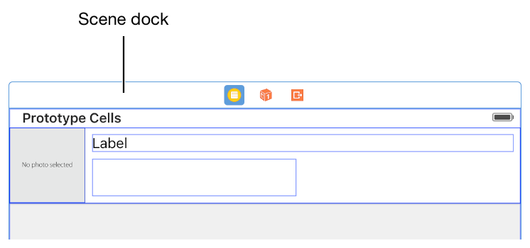
Open the Identity inspector.
Identityインスペクタを開いてください。
In the Identity inspector, find the field labeled Class, and select MealTableViewController.
同一性インスペクタにおいて、Classとラベルをつけられる欄を探してMealTableViewControllerを選択してください。
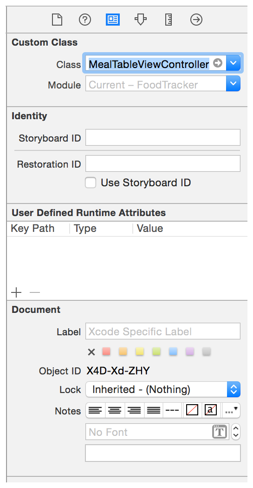
Checkpoint: Run your app. The list of items you added in the viewDidLoad() method should show up as cells in your table view. You’ll notice there’s a little bit of overlap between the table view cells and the status bar—you’ll fix that in the next lesson.
確認点：あなたのアプリを実行してください。あなたがviewDidLoad()メソッドに加えた項目のリストが、セルとしてあなたのテーブルビューの中に姿を見せるはずです。あなたは、テーブルビューセルとステータスパーが少しばかり重なっているのに気がつくでしょう—あなたは次のレッスンでそれを修正します。
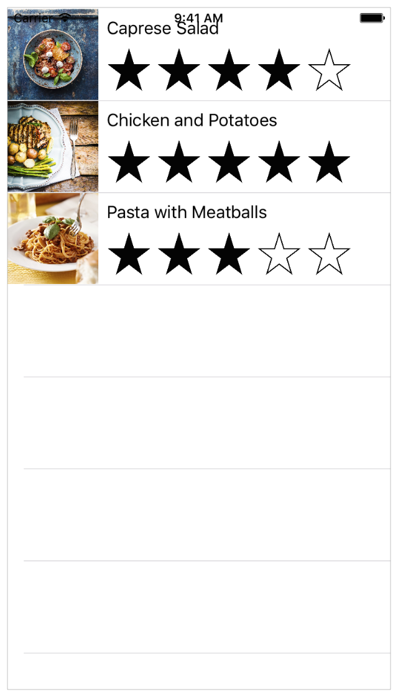
Prepare the Meal Scene for Navigation
食事シーンをナビゲーションのために整える
As you prepare to implement navigation in the FoodTracker app, you need to delete and replace a few pieces of code and UI that you won’t need anymore.
あなたがFoodTrackerアプリにおいてナビゲーションを実装する準備をする際に、あなたが必要とするのはいくつかのコード部分とUIを削除し置き換えることです、それはあなたがもう必要としないものです。
To clean up unused pieces of the project
プロジェクトの使用されない部分を掃除するには
Open your storyboard and look at the meal scene.
あなたのストーリーボードを開いて食事シーンを見つけます。
Your meal scene UI should look something like this:
あなたの食事シーンUIはこのようにものに見えるはずです：
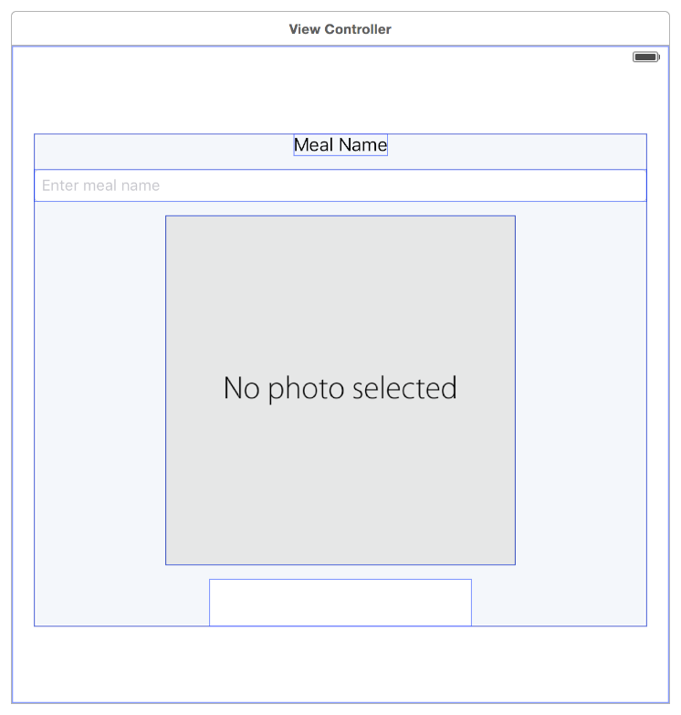
In the meal scene, select the Meal Name label, and press the Delete key to delete it.
この食事シーンにおいて、Meal Nameラベルを選択してください、そしてデリートキーを押してそれを削除してください。
The rest of the elements in the stack view reposition themselves appropriately.
スタックビューの中の残りの要素は、それら自身で適切に再び位置決めをします。
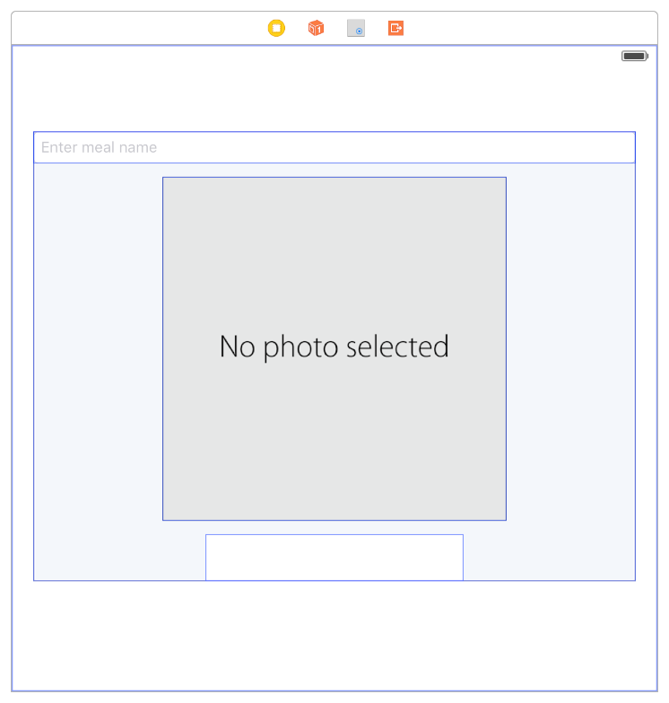
Open ViewController.swift.
ViewController.swiftを開いてください。
In ViewController.swift, find the textFieldDidEndEditing(_:) method.
ViewController.swiftにおいて、textFieldDidEndEditing(_:)メソッドを見つけてください。
Delete the line that sets the text property of the label.
ラベルのテキストプロパティを設定する行を削除してください。
mealNameLabel.text = textField.text
You’ll replace this with a new implementation soon.
あなたはこれを新しい実装でまもなく置き換えます。
In ViewController.swift, find the mealNameLabel outlet and delete it.
ViewController.swiftにおいて、mealNameLabelアウトレットを見つけてそれを削除してください。
@IBOutletweakvarmealNameLabel: UILabel!
Because you now have two view controllers in your project, it makes sense to give ViewController.swift a more meaningful name.
あなたは現在２つのビューコントローラをあなたのプロジェクトの中に持つため、ViewController.swiftにより理解しやすい名前を与えるほうが賢明です。
To rename the ViewController.swift file
ViewController.swiftファイルを改名するには
In the project navigator, click the ViewController.swift file once and press the Return key.
プロジェクトナビゲータにおいて、ViewController.swiftファイルを一度クリックして、リターンキーを押してください。
Xcode lets you type in a new name for the file.
Xcodeは、あなたにこのファイルのための新しい名前を入力させます。
Rename the file MealViewController.swift. Press Return.
ファイルをMealViewController.swiftに改名してください。リターンキーを押します。
In MealViewController.swift, find the class declaration line:
MealViewController.swiftにおいて、次のクラス宣言行を探してください：
In the comment at the top of the file, also change the name from ViewController.swift to MealViewController.swift.
このファイルの最上部のコメントにおいてもまた、名前をViewController.swiftからMealViewController.swiftに変更してください。
Open your storyboard.
あなたのストーリーボードを開いてください。
Select the meal scene by clicking on its scene dock.
食事シーンをそれのシーンドックをクリックして選択してください。
With the meal scene selected, open the Identity inspector .
食事シーンが選択された状態で、Identityインスペクタを開いてください。
In the Identity inspector, change the Class field from ViewController to MealViewController.
同一性インスペクタにおいて、Class欄をViewControllerからMealViewControllerに変更してください。
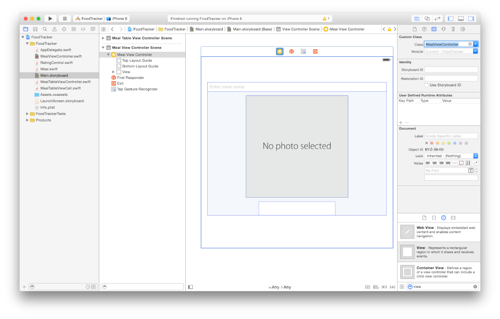
Checkpoint: Build or run your app. Everything should work as before.
確認点：あなたのアプリをビルドまたは実行します。すべてのものが前と同じに機能するはずです。
At this point, you may see an Xcode warning related to the fact that there’s no way to reach the meal scene in the app. Don’t worry; you’ll add navigation behavior in the next lesson.
この時点で、あなたは、このアプリの中の食事シーンに到達する方法がないという事実に関連したXcodeの警告を見るでしょう。心配はいりません；あなたは、次のレッスンにおいてナビゲーション挙動を加えます。